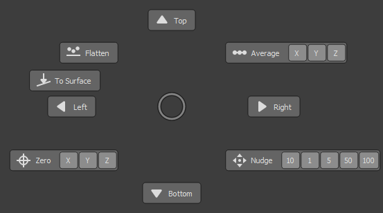
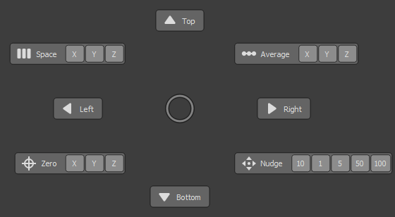
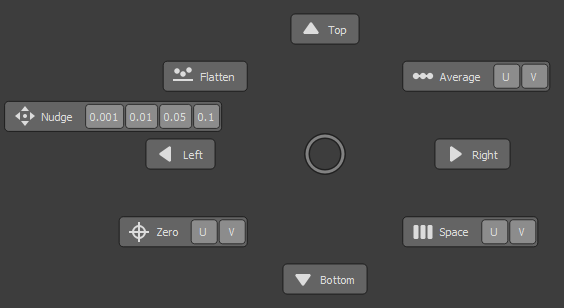

Tools / Align Pie
Align Pie
Line up and space objects, vertices or UVs from one pie on Ctrl+Shift+D.
What it does
The Align pie moves things into line. It picks what to move for you: the selected vertices when you edit a poly (edges and polygons use their vertices), the selected knots on a spline, the selected UVs in the Unwrap UVW editor, and otherwise the pivots of the selected objects.



Open the pie, flick Flatten, then use Nudge steps on a few vertices.
How to use it
- Select objects, or vertices, edges or polygons, or UVs in the Unwrap UVW editor.
- Press Ctrl+Shift+D. A pie menu opens around the mouse. Hold the key, flick the mouse toward a button and let go to run it. You can also click a button. Esc, a right-click or a click in the centre closes the pie. If you let go of the key without moving, the pie stays open for a click.
- For a row with small buttons (Average, Zero, Space, Nudge), click the axis or step button you want.
- Hold Alt while you click to use the object's own axes instead of the world axes.
Options
| Button | What it does |
|---|---|
| Left, Right, Top, Bottom | Moves the selection onto the vertex (or pivot) that is furthest in that direction on screen, along the axis closest to that direction in the viewport. In the UV editor: Left and Right use the lowest and highest U, Top and Bottom the highest and lowest V. |
| Average X Y Z | Puts everything at the average position on the axis you click. |
| Zero X Y Z | Moves everything to zero on the axis you click. |
| Space X Y Z | Objects: equal gaps between three or more objects; the two outer ones stay. |
| Flatten | Vertices and UVs: flattens the selection, then opens a live tool (see below). A row of edges is straightened. |
| To Surface | Poly vertices only: slides the selected vertices along an edge or an axis until they lie on the plane of a face you point at (or on the real surface of the object). It opens a live tool; see To Surface for its keys. |
| Nudge | Click a step size to move the selection by that step. Steps in the UV editor are 0.001, 0.01, 0.05 and 0.1. |
| Space U V (UVs) | Equal gaps between the selected UV islands. Pinned UVs stay put. |
The Flatten tool runs live. It flattens at once, then you can press:
| Key | What it does |
|---|---|
| B | Pick mode on or off: a click locks or unlocks the vertex under the mouse. Locked vertices stay put and are drawn green. |
| S | By sharp edges: each group of polygons between hard edges gets its own plane. |
| F | Each face: every polygon flat on its own plane, keeping the overall shape. |
| E | Space evenly: spaces the vertices of rows evenly. |
| Enter, Space or click | Done (click works when pick mode is off). |
| Esc or right-click | Cancels. |
Good to know
- On a spline (Editable Spline or Line, at vertex, segment or spline level) the pie works on the selected knots.
- Max has no 3D cursor, so the cursor row you may know from Blender is left out.
- The same actions are also in the Align UVs row of the UV and Smoothing panel.
- Undo takes the change back.